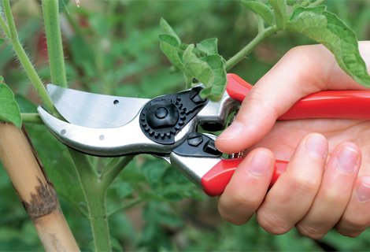

Bem vindos a BioTech!
A BioTech é um projeto criado por dois alunos de 18 anos do nível médio integrado ao curso de Informática do Instituto Federal do Rio Grande do Norte, campus João Câmara-RN. Nosso objetivo é unir tecnologia e biologia para ensinar a criação de ecossistemas sustentáveis, tornando o conhecimento sobre botânica acessível e prático para todos.
Acreditamos que qualquer pessoa pode cultivar a natureza ao seu redor, seja através de um terrário, uma horta ou até mesmo um ecossistema completo. Com ciência e inovação, queremos inspirar novas formas de interação com o meio ambiente, ajudando a construir um futuro mais verde e equilibrado.
Qual o nosso objetivo?
Nosso projeto busca ensinar, de forma acessível e interativa, como criar e manter mini ecossistemas sustentáveis. Através de uma plataforma digital, queremos promover a educação ambiental, estimular a aprendizagem prática e conscientizar sobre a importância do equilíbrio ecológico.
Com guias passo a passo, atividades interativas e recursos visuais, tornamos o processo dinâmico e envolvente, incentivando práticas ecológicas no dia a dia.
Mas... Quem somos nós?
-
Mariana Costa
Professora de biologia de nível médio integrado do Instituto Federal do Rio Grande do Norte, campus João Câmara-RN
-
Juan Cauê
Aluno de 18 anos do nível médio integrado ao curso de informática do Instituto Federal do Rio Grande do Norte, campus João Câmara-RN
-
Luiz Gustavo
Aluno de 17 anos do nível médio integrado ao curso de informática do Instituto Federal do Rio Grande do Norte, campus João Câmara-RN
Somos uma equipe formada por uma especialista e professora de biologia e 2 desenvolvedores de nível técnico de informática
Criação do mini-ecossistema
Os ecossistemas são sistemas complexos onde organismos interagem entre si e com o meio ambiente, formando um equilíbrio essencial para a manutenção da vida. Em escala reduzida, os mini ecossistemas são representações desses ambientes naturais, recriados em pequenos recipientes, como aquários, terrários e garrafas PET. Esses sistemas funcionam como laboratórios vivos, permitindo observar ciclos naturais, como o da água, do carbono e dos nutrientes, em um espaço controlado. Além de serem uma ferramenta educativa, os mini ecossistemas incentivam a sustentabilidade e a compreensão da natureza. Para garantir seu funcionamento equilibrado, é essencial seguir algumas etapas fundamentais.
-

Escolha do recipiente para o terrário
A escolha do recipiente influencia diretamente as condições do mini ecossistema. Aquários são ideais para sistemas aquáticos, garrafas PET são opções sustentáveis.
-

Seleção de plantas e pequenos organismos
É essencial escolher plantas e organismos compatíveis. Musgos e samambaias são ideais para terrários fechados, suculentas para abertos, e algas para aquários.
-

Como manter o equilíbrio entre água, luz e nutrientes
Controlar esses fatores garante a estabilidade do ecossistema. A rega deve ser ajustada ao tipo de ambiente, a luz deve ser adequada para a fotossíntese, e os nutrientes precisam ser fornecidos pelo solo ou substrato.
-

Manutenção e cuidados ao longo do tempo
Mesmo ecossistemas autossustentáveis exigem monitoramento. Podas, controle da umidade, ventilação e observação da fauna e flora são essenciais para evitar desequilíbrios.
Materiais necessários para criação e manutenção do terrário
Seleção de materiais
Para construir um mini ecossistema equilibrado, é fundamental escolher os materiais corretos. Cada elemento tem um papel essencial na manutenção da umidade, troca de gases e fornecimento de nutrientes para as plantas e organismos presentes. A seguir, apresentamos os principais materiais necessários para a montagem de um terrário e suas funções dentro do sistema.
- 1 recipiente grande
- Cascalho;
- Carvão vegetal triturado;
- Húmus;
- Folhas secas trituradas;
- Terra;
- Plantas de espécies que não cresçam muito;
- Massa de vidraceiro (opcional);
- Água;
- Regador (opcional);
- Termomêtro (opcional);
- Fita-crepe;